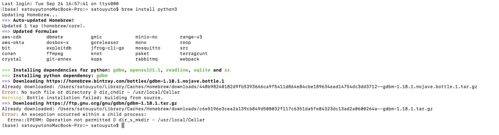
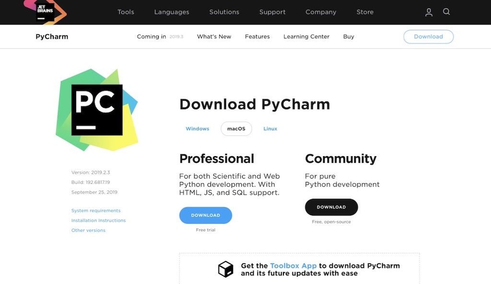

インターフェイスを作成するために環境を作ります。
先生のご教授により、『python』と呼ばれるプログラミング言語が使いやすいと教えていただいたので、『python』を用いてこれから作成していきます。
それに伴い、今回は自分のMacに『python』が使える環境を作っていきます。
GitHabのインストールに使ったhomebrewを使ってpythonのインストールをします。
ターミナルにて、『brew install python3』と入力する。

『PyCharm』(ぱいちゃーむ)とは、Pythonの統合開発環境 (IDE) の一つです。
(IDM：エディタだけでなくプロジェクト管理やデバッガなど開発に必要な機能を統合的に提供するアプリケーションのこと)
先生曰く、Pythonのエディターの中で最強に使いやすいとのことです。
また学生だと無料です！
PyCharmのHPよりダウンロードできます。
お手持ちのパソコンのOSを選択してCommunityのDownloadのボタンを押します。
あとは各OSのインストローラーに沿ってインストールしてください。

様々なプログラミングソフトを比較して作っていこうかなと思います。
プログラミングチームの皆さん、使いやすいソフトを教えてください。。！